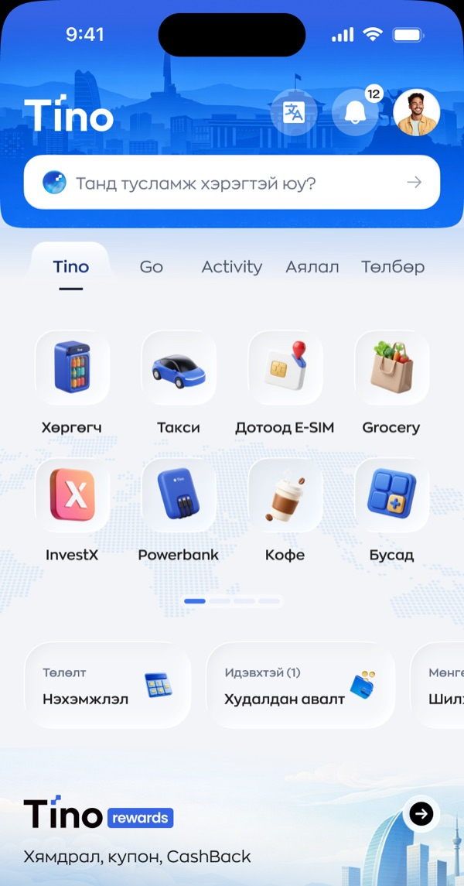
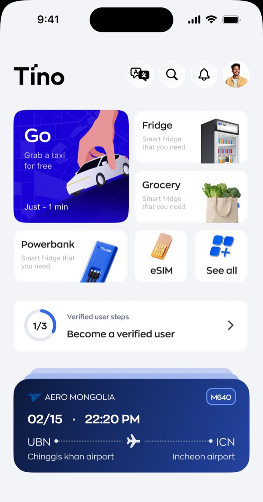
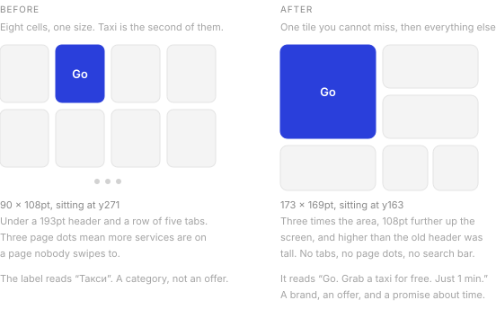
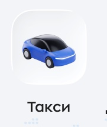
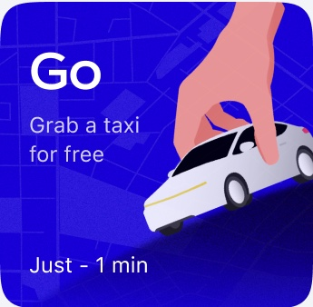

Tino homepage overhaul
2026
The brief was one sentence. More people should book a ride. Everything below is what that sentence did to the first screen of a superapp that also sells groceries, eSIMs, power banks and coffee.1
One of eight
Here is the old home screen. A blue header with a search field, a row of five tabs, then eight icons in a four by two grid. Taxi is the second one.
Nothing on that screen said a ride matters more than a fridge. Every cell was 90 by 108 points. Every icon was 64 by 64. They shared a shape, a background, a corner radius and a type size. The grid treated eight services as eight equal options, which is a reasonable thing to do right up until somebody tells you that one of them pays for the others.


Two more things were working against a ride booking. The grid carries page dots, so some services live on a second page that most people never swipe to. And the five tabs above it, Tino, Go, Activity, travel and payments, ask you to pick a category before you pick a thing. That is two decisions standing between opening the app and getting a car.
Making room
Before anything could get bigger, something had to go. I cut the search field first. It asked “do you need help?”, which is a support question, and it was eating the widest strip of the most valuable screen in the product. I cut the tab row next.
That freed enough space for me to move the whole service grid up. The old taxi cell sat at y271, underneath a 193 point header. My new Go tile starts at y163, which is higher up the screen than the old header even reached.

Size is the argument
I made the Go tile 173 by 169 points. The cell it replaced was 90 by 108. That is three times the area, and I put a hand reaching down to pick up a car inside it instead of a 46 point icon.2

Before90 × 108

After173 × 169
I let colour do the other half of the work. The old header was blue, the old tabs were blue, the old search field sat on blue. When the whole top of the screen is brand colour, brand colour stops pointing at anything. I made the new home white, which leaves the Go tile as the only saturated block above the fold. It is the same blue. It just got its meaning back.
A noun becomes an offer
The old cell said Такси. Taxi. It named a category and stopped.
I made the new tile say three things in sequence. Go, which is the product name and the thing we actually want people to remember. Grab a taxi for free, which is an offer. Just 1 min, which answers the question that stops most people from opening a ride app at all, that being how long they will stand outside waiting.
An icon grid asks you to recognise a service. A tile like this one asks you to accept a deal. Those are different jobs, and only one of them converts.
The free ride and the one minute wait are business decisions rather than mine, and both of them make a promise the operations side has to keep.3 If a car takes eleven minutes, this tile has done real damage.
What it costs
This is the part I made sure to put in front of the team, because promoting one service is arithmetic. The screen did not get bigger. Go took its three times area from somewhere.
I dropped Fridge and Grocery to half tiles. Power bank, eSIM and coffee fell to the small row or behind “See all”. InvestX, which was a full cell on the old grid, is not on the first screen any more at all. Every one of those services has a team, a target and somebody who will notice.
So the redesign is a bet, and I named it as one rather than dressing it up. Promoting one service on a shared home screen is arithmetic, not decoration, and my case for making it was that a ride is the habit the rest of the app is built on. Get somebody opening Tino twice a day for a car and the fridge and the power bank are one tile away. Leave Go as the second icon in a grid of eight and nothing else gets a chance.
- These are design files, not production screenshots. Balances, flight numbers and merchant names are placeholder data. This page only covers the top half of the screen, which is where the ride booking decision gets made.
- Every measurement on this page is in design points, read straight off the two Figma files rather than paced out by eye. The old cell is 90.25 by 108, which I have rounded.
- Designers hand out promises like this more casually than they should. A number in a tile is a contract, and the person who has to honour it is usually in a different building.